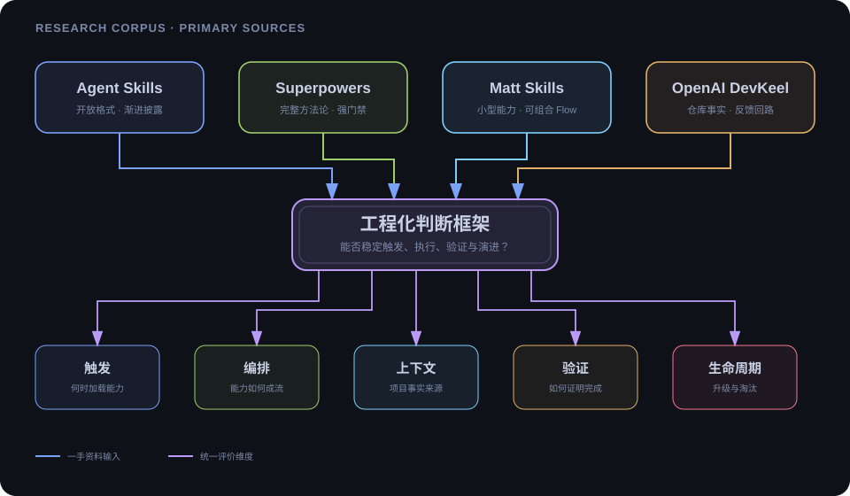
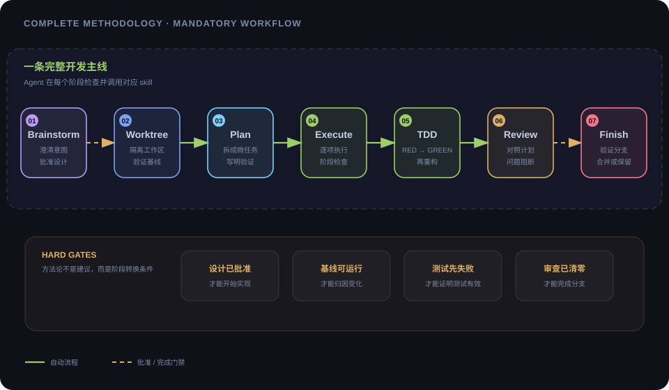
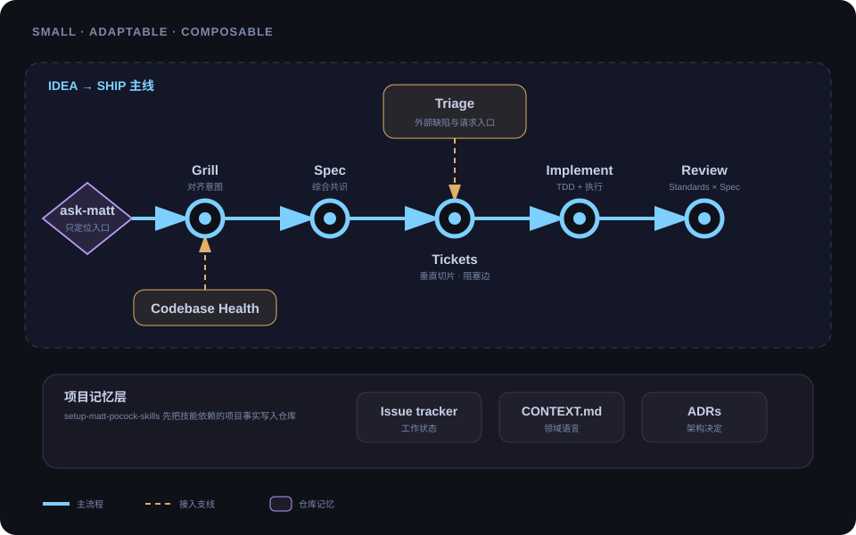
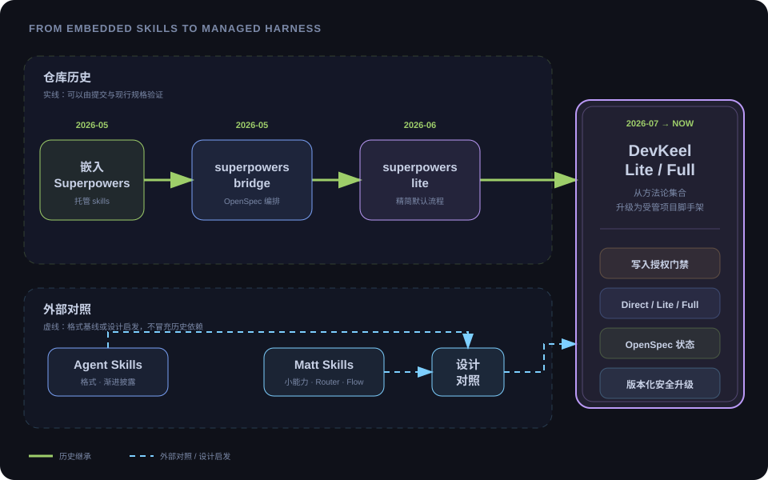

// open-source research

研究对象：Agent Skills · Superpowers · Matt Skills · Harness Engineering
research 01 · superpowers

inside the methodology
会话开始即加载 using-superpowers；行动前先检查是否有匹配 Skill。
设计需确认、测试先失败、Review 问题清零，关键节点都有门禁。
验证命令与实际输出优先于“应该没问题”，完成声明必须可复查。
用压力场景验证 Skill：先观察基线失败，再证明新纪律能改变行为。
research 02 · matt skills
flow over catalog

compare · engineering choices
| 维度 | Superpowers | Matt Skills | DevKeel 选择 |
|---|---|---|---|
| 定位 | 完整、强约束的方法论 | 小型、可编辑、可组合能力 | 中央契约 + 专项能力 |
| 入口 | 自动触发强制流程 | 用户 Router + 自动纪律 | L0 专项 + 风险路由 |
| 状态 | design / plan / branch | tracker / tickets / domain docs | OpenSpec artifacts |
| 质量 | 默认 TDD / Review / worktree | TDD、诊断、双轴 Review | 与任务风险相称的验证 |
| 演进 | plugin 与 Skill 更新 | 可编辑副本或 managed bundle | versions.yml + 安全迁移 |
from research to scaffold
